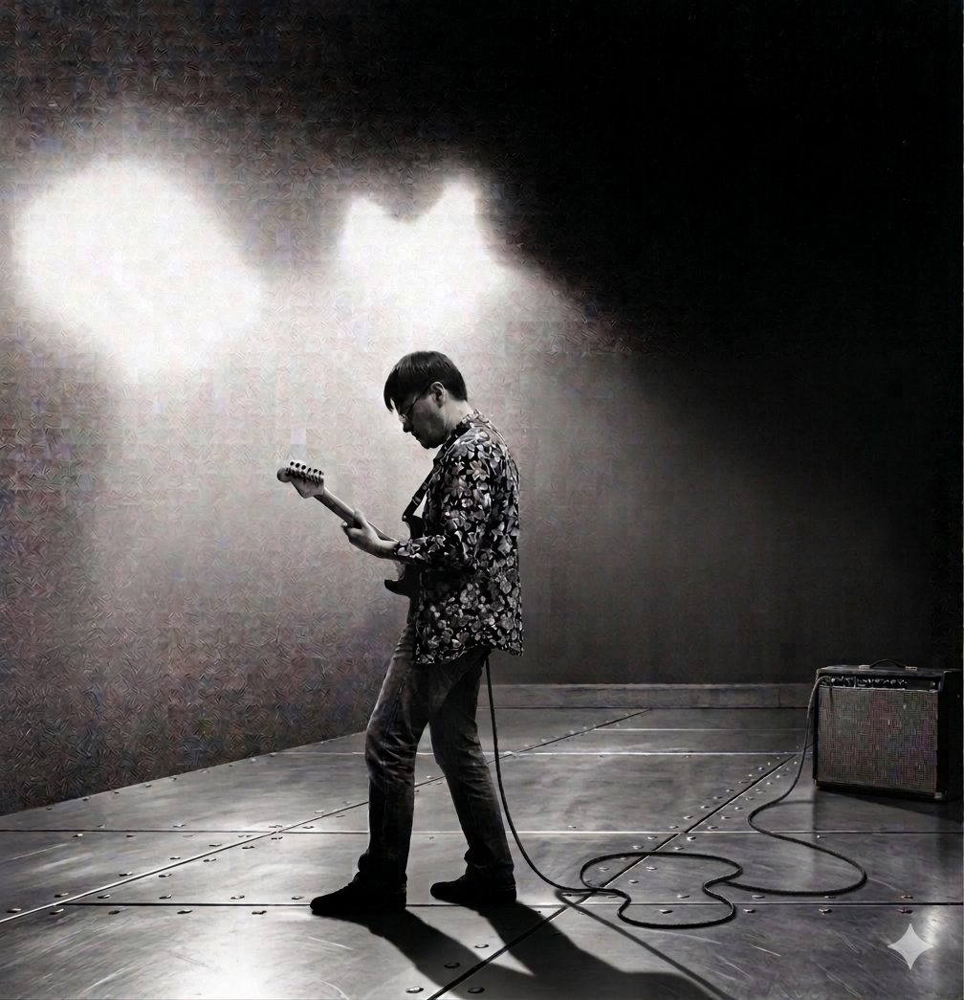

Guitarist / Composer / DTM Instructor
ギターと作曲(DTM)のレッスン、楽曲制作、Max/MSPを使ったサウンド作品を行っています。実測データに基づいた再現性のある作曲メソッドで、初心者から一曲を仕上げたい方まで指導します。
01 — About
ギタリスト・作編曲家として活動。実測分析にもとづく作曲メソッドの開発や、Max/MSPを用いたサウンド作品の制作も行っています。

02 — Artistic Activity
ギタリスト・音楽家としての演奏・自主制作楽曲、Max/MSPを使ったインタラクティブサウンド作品も手がけています。
03 — Commercial Composition
作曲家としてのクライアントワーク。BGM・CM・映像音楽などの制作依頼を承っています。
04 — Lessons
ギターコースとDTM(作曲)コースを用意。実在曲のステム解析から導いた「ワンループ×レイヤー構成」など、再現性のある教材で指導します。
基礎奏法からバッキング・ソロまで、レベルに合わせて指導します。
DAWでの打ち込み・アレンジ・ミックスの基礎から、一曲を仕上げるまで伴走します。
実在曲のステム解析による実測データをもとにした、ワンループ×レイヤー構成の作曲教材。
05 — Contact
レッスンのお申し込み・制作のご依頼など、お気軽にご連絡ください。